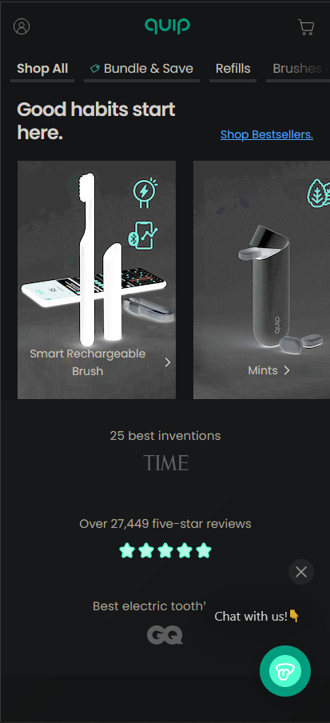

When you visit Amazon's homepage, you'll notice that the page is divided into different sections, each occupying roughly one-third of the screen horizontally. The main product or content section is typically in the center third of the page, drawing your attention to featured products, promotions, or recommendations. The remaining thirds on either side often contain navigation menus, search bars, and other elements.

Quip's website embodies a clean and minimalistic design with generous white space, promoting simplicity and clarity. Its spacious layout, marked by ample margins and padding, ensures readability by preventing clutter. The limited color palette, primarily white and subtle grays, maintains a sense of calm and simplicity, enabling visitors to effortlessly focus on essential content and product details.
Razer's website excels in visual hierarchy through distinct typography, including fonts and styles, guiding users to essential content. They use a bold black background with vibrant green accents, ensuring key elements stand out. High-quality product images strategically placed enhance the overall user experience.